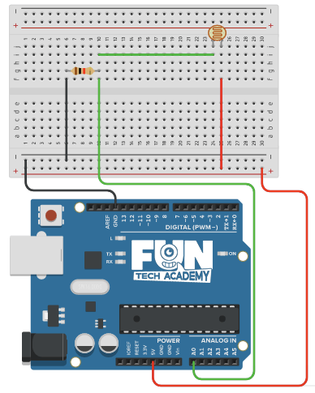

En este tema aprenderemos a medir la intensidad de la luz utilizando una entrada analógica.
(1) x Placa Arduino
(1) x Protoboard
(1) x Fotoresistencia
(1) x LED blanco de 5mm
(1) x Resistencia de 220 ohm
(1) x Resistencia de 10 kohm
(4) x M M cables (cables de macho a macho)
Una fotoresistencia, fotorresistor, fotocélula o LDR (por sus siglas en inglés “light-dependent resistor”) es un componente electrónico cuya resistencia varía en función de la luz recibida.
Una fotoresistencia está formado por un semiconductor, típicamente sulfuro de cadmio (CdS). Al incidir la
luz sobre él algunos de los fotones son absorbidos, provocando que electrones pasen a la banda de conducción
y, por tanto, disminuyendo la resistencia del componente.
Se trata de un sensor que actúa como una resistencia variable en función de la luz que capta. A mayor
intensidad de luz, menor resistencia: el sensor ofrece una resistencia de 1M ohm en la oscuridad, alrededor
de 10k ohm en exposición de luz ambiente, hasta menos de 1k ohm expuesto a la luz del sol. Aunque estos
valores pueden depender del modelo de LDR.
El LDR actúa como una resistencia variable. Para conocer la cantidad de luz que el sensor capta en cierto
ambiente, necesitamos medir la tensión de salida del mismo. Para ello utilizaremos un divisor de tensión,
colocando el punto de lectura para Vout entre ambas resistencias. De esta forma:

Una vez efectuado todo el cableado, descargaremos el script del siguiente
enlace y lo cargaremos como hemos
aprendido.
En el ejemplo, si hay luz, encendemos el LED de la placa.
Ahora que ya sabemos utilizar la fotorresistencia, haremos como las farolas inteligentes. Encenderemos el LED blanco cuando estemos a oscuras.
Volver al índice